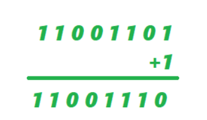

El complemento A2 es un método utilizado en informática para representar números negativos en sistema binario.
Se obtiene siguiendo dos pasos:
Número binario: 0101
Complemento a 1:
1010
Se suma 1:
1010 + 1 = 1011
Resultado: 1011

| Paso | Resultado |
|---|---|
| Binario | 0101 |
| Invertir | 1010 |
| +1 | 1011 |
Ingresa un número binario:
Complemento A2: -